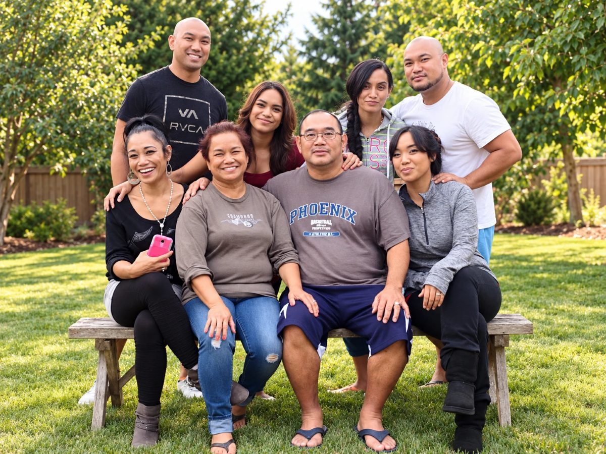

October 14, 2026, 10:00 AM – 4:00 PM Viewing & Rosary
Mountain View Funeral Home
4100 Steilacoom Blvd SW, Lakewood, WA 98499
Come any time during the viewing. The family prays the Rosary together at 1:00 PM.

July 20, 1955 – September 24, 2026
A simple, humble man who asked for little and gave his family everything.
When and where to be for each service. Everyone is welcome at all three.
Mountain View Funeral Home
4100 Steilacoom Blvd SW, Lakewood, WA 98499
Come any time during the viewing. The family prays the Rosary together at 1:00 PM.
St. John of the Woods Catholic Church
9903 24th Ave E, Tacoma, WA 98445
Please arrive by 9:30 AM so you are seated before Mass begins.
A reception follows in the church hall. Father will announce it at the end of Mass.
Tahoma National Cemetery, Kent, WA
Please arrive by 9:30 AM. The cemetery runs on a strict military schedule and cannot hold a service for late arrivals. It is a Friday morning — allow extra time for traffic and construction, and plan to leave early.
Interment means burial. Because Patrick served twenty years in the U.S. Army, he will be laid to rest with military honors — a short ceremony by uniformed service members that usually includes the playing of Taps and the folding of the American flag, which is presented to the family.
What happens during the Funeral Mass, in order.
Tuesday, October 20, 2026 · St. John of the Woods · Celebrants: Fr. Tuan, Pastor, and Fr. Hendry
A reception follows in the church hall. Father will announce it at the end of Mass.
CHamoru for “thank you” — a wish that God’s mercy be with you.
The family of Patrick Cabrera thanks everyone who has surrounded us with prayers, food, and presence these past weeks. Your kindness reflects the man we are honoring. To the family who traveled to be with us, some of you from Guam, thank you for coming so far.
Special thanks to Fr. Tuan, Fr. Hendry, the St. John of the Woods Lazarus Ministry, and the staff of Mountain View Funeral Home.
Mary, Regina, Bella, Vincent, Isaac, Roxanne, Monique, and the Cabrera family
Patrick Reyes Cabrera was born on July 20, 1955, in the village of Piti, Guam, to Jose Quenga Cabrera and Ignacia Reyes Cabrera, one of ten children in a house that was never quiet. Raised in the faith by a grandmother who did not accept excuses, he served as an altar boy at Assumption of Our Lady Church in Piti — a parish founded the very year he was born. Family lore holds that when he came home one Sunday crying over a bloodied shin from a bike wreck, she taped it up and sent him back to Mass. That was Patrick for the rest of his life: you show up, you serve, and you don't make a fuss about it.
In September 1975, fresh out of school, he joined the United States Army. He served twenty years as an infantryman and, from 1988, as a drill sergeant — a job that suited a man who believed a 10 o'clock start meant 10 o'clock. His career carried the family from Germany to Fort Sill, Oklahoma, to Washington, home to Guam, and back to Washington, where he retired in August 1995. Two years later he began a second career with the United States Postal Service, delivering for seventeen years before retiring for good. Two employers in forty years. He was not a man who needed much variety.
He married Mary on June 17, 1985, and they spent forty-one years together. Ask Mary what made him happy and the answer is simple, because he was: breakfast after Sunday Mass, every Sunday, no exceptions. A backyard full of kids and grandkids and a grill full of ribs he refused to write the recipe for. A Minnesota Vikings game on the television — a loyalty he picked up in 1969, when the Vikings were the team Guam got on the air, and never once reconsidered.
He never needed an occasion. What made Patrick happiest was the simplest thing — all of us in the same room on a Sunday afternoon, the kids loud, and later the grandkids underfoot, nobody in a hurry to leave. We used to think it was just another Sunday. He knew better. Those afternoons were the reason for everything else.
His faith was the quiet center of all of it. He and Mary prayed the rosary together every day, and whatever devotion she took up — the Divine Mercy chaplet, the novenas — he was beside her for it. In Germany in 1985, given a temporary house with more bedrooms than they knew what to do with, the family turned one of them into a prayer room. He wanted nothing more for his children and grandchildren than that they would know the Church he loved.
He was a simple, humble man who asked for little and gave his family everything. We will miss him at breakfast.
A story, a few words — anything you remember. The family will read every one.
Many of you have asked how you can help. Gifts will go toward meals, travel for family coming from Guam, and the costs of these days.
GoFundMe suggests an optional tip at checkout. It goes to GoFundMe, not the family. To skip it, tap “Enter custom tip” and type 0.
If you'd rather bring a card to the viewing or the Mass, there will be a place for it there.
Si Yu'os ma'åse'.
